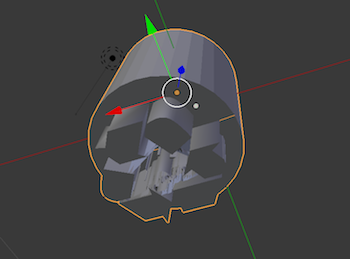
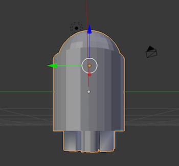
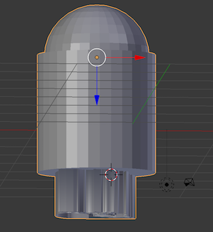
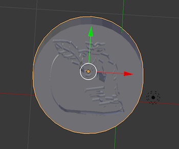
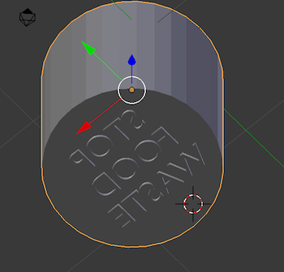
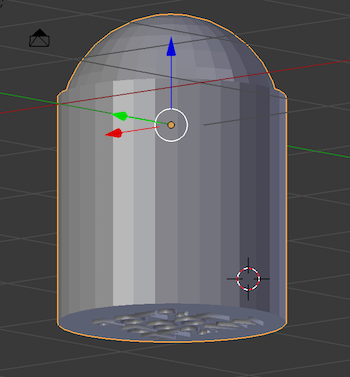

I was given the task to create three dimensional stamps in order to recognize a common problem on campus. I chose to model these stamps off of my posters, in the design link under portfolio, to raise awareness for the constant problem of food waste in dining halls. I used Adobe Illustrator for the design portion and Blender for the prototyping.
 A recycling symbol with a sandwich in the middle.
 A half garbage half apple symbol.
 Overall campaign stamp reading "Stop Food Waste".